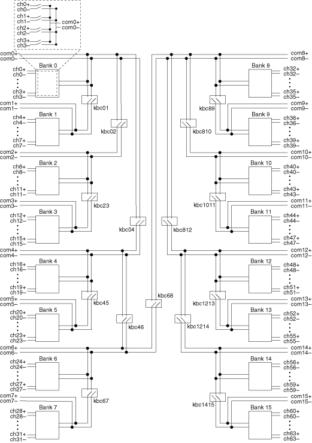
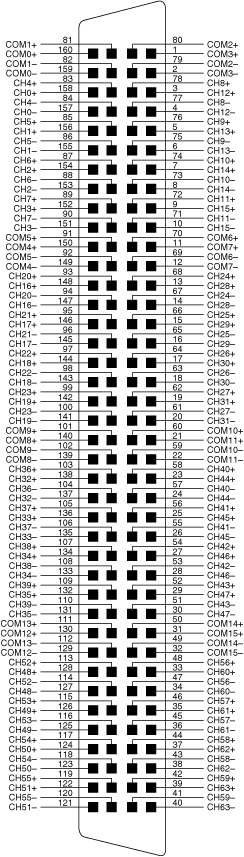

When using the NI PXI-2576 in the independent topology, connect the signals using the NI TB-2676 terminal block. Select this topology to utilize the full routing capabilities of the NI PXI-2576. The following figure represents the NI PXI-2576 in the independent topology.

With the independent topology, you can let NI-SWITCH determine the path between two specified channels by setting the intermediate channels as reserved for routing and using the niSwitch Connect Channels VI or the niSwitch_Connect function, or you can control individual relays using the niSwitch Relay Control VI or the niSwitch_RelayControl function.
The following figure and table identify the pins for the NI PXI-2576 in the independent topology.
